The blog introduces the paper : AutoCTS+
Introduction
-
Leveraging the powerful feature extraction capabilities of deep learning models, expert-designed ST-blocks have been proposed to capture spatio-temporal dependencies to enable accurate forecasting.
-
A more recent approach is to automate the design of effective ST-blocks, represented as a supernet-subnet architecture. The goal is to learn the operator-associated weights $[\alpha _i]$, upon which an optimal subnet is obtained by picking the operator with the highest weight between every two nodes.
-
The existing automated CTS forecasting methods above still suffer from three main limitations:
- Lack of support for joint search for architectures and hyperparameters .Rely on predefined hyperparameters including architectural hyperparameters(e.g. the number of latent representations, i.e., nodes, in an ST-block and the size of a latent representation) and training hyperparameters(e.g. the dropout rate). Thus semi-automated.
- Poor scalability .The entire supernet must reside in memory during training, which may cause memory overflow in large-scale CTS settings. The memory usage of a supernet goes overflow more than a subnet, which limits the scalability of neural architecture search.
- One-time use. Existing automated CTS forecasting methods train a supernet for each specific dataset from scratch, which is costly.
-
SEARCH, A Scalable and Efficient joint ARChitecture and Hyperparameter search framework is proposed to address the limitations above.
- Propose a novel search space for correlated time series forecasting to facilitate joint search for architectures and hyperparameter settings.
- A memory-efficient Architecture-Hyperparameter Comparator (AHC) is proposed to rank arch-hyper candidates that encompasses an easy-to-obtain proxy metric to generate pseudo-labels to train an AHC in a denoising manner, thereby improving search efficiency.
- Propose a transfer method that is able to quickly adapt a trained AHC to a new dataset, thus significantly improving the AHC training efficiency on new datasets.
- Extensive experiments on six benchmark datasets show that SEARCH is able to efficiently find better-performing CTS forecasting models compared to state-of-the-art manual and automatic methods.
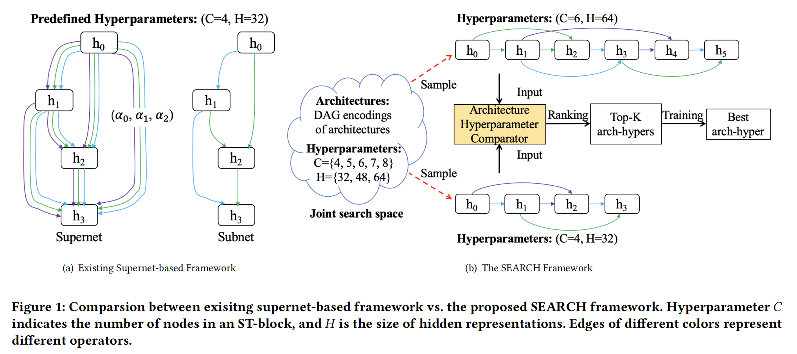
Preliminaries
Problem Settings
The single-step CTS forecasting:
$$\hat{X} _{t+P+Q} = \mathcal{F}(X _{t+1}, X _{t+2},…,X _{t+P};G)$$
The multi-step CTS forecasting:
$$(\hat{X} _{t+P+1},\hat{X} _{t+P+2},…,\hat{X} _{t+P+Q}) = \mathcal{F} (X _{t+1},X _{t+2},…,X _{t+P};G)$$
where $x _t \in \mathbb{R} ^{N \times F}$ denotes the feature vectors of all time series at timestamp $t$. The combined data is $\mathcal{X} \in \mathbb{R} ^{N \times T \times F}$. $G = (V,E,A)$, where $V$ denotes the sensors, $E$ denotes the correlation relationships between sensors, $A$ denotes the adjacency matrix about the strengths of the relationships between time series.
The goal is to automatically build an optimal ST-block $\mathcal{F} ^\ast$ from a predefined combined architecture-hyperparameter search space $S$ that minimizes the forecasting error on a validation dataset $\mathcal{D} _{val}$.
$$\mathcal{F} ^\ast = \underset{\mathcal{F} \in S}{argmin} ErrorMetric (\mathcal{F},\mathcal{D} _{val})$$
Forecasting Models
The common framework of manually designed neural CTS forecasting models has three components: an input module, an ST-backbone and an output module.
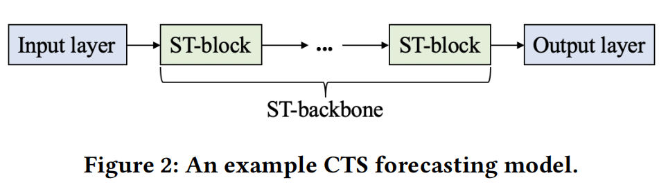
The specific types of S/T-operators in ST-blocks and their connections are critical to the success of a CTS forecasting model.
Existing Automated Methods
Existing Automated Methods(AutoCTS) take account of the design of ST-blocks and ST-backbone by using the method proposed in DARTS so that the model can be trained by gradient descent.
SCALABLE AND EFFICIENT JOINT SEARCH
Joint Search Space
The joint search space considers two aspects of ST-blocks:
- the architecture, including operators and their connections
- the hyperparameters, including architecture-related structural hyperparameters(e.g., the hidden dimension) and optimization-related training hyperparameters(e.g. the dropout rate).
Architecture Search Space
Candidate operators
Obtain a candidate operator set $O$ composed of five operators, i.e.
The “identity” operator to support skip-connections between nodes.
Two T-operators:
- The Gated Dilated Causal Convolution used to capture short-term temporal dependencies.
- Informer(INF-T) excels at learning long-term temporal dependencies.
Two S-operators:
- The Diffusion Graph Convolution Network is effective at capturing static spatial correlations.
- Informer(INF-S) is effective at discovering dynamic spatial correlations.
The set $O$ can accommodate additional operators by following steps:
-
Include the operator in the candidate operator set $O$.
-
Sample some arch-hypers that include the new operator and use them to generate additional clean and noisy samples to retrain the AHC.
-
The clean and noisy samples collected before can be reused when retraining the AHC, and AHC training is quite efficient.
Topological connections
Consider the possible topological connections among the operators within an ST-block.
An ST-block can be represented a directed acyclic graph (DAG) $G _d$ with $C$ nodes, where each node $h _i$ represents a feature representation and each edge represents an operator $O _i$. Propose the rules to generate candidate ST-blocks:
- There is at most one edge from node $h _i$ to node $h _j$, and no edge is allowed from node $h _j$ to node $h _i$, where $i < j$.
- The operator on an edge is selected from the chosen candidate set, including the identity operator.
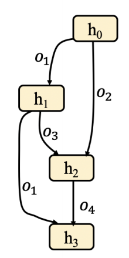
Hyperparameter Search Space
Consider two kinds of hyperparameters:
- Structural hyperparameters
- Training hyperparameters
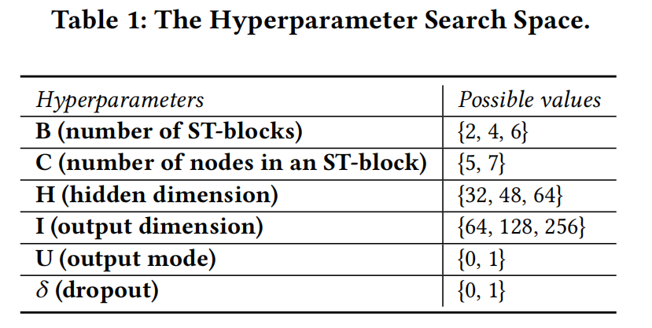
The framework can easily include additional hyperparameters as well as expanded ranges of values for existing hyperparameters.
Structural hyperparameters related to the sepcific structure of an ST-block.
$U$ denotes the output mode, takes the last node as the output or takes the sum of all nodes as the output.
Training hyperparameters include the dropout rate $\delta$.
Encoding of the Joint Search Space
Combine the Architecture and Hyperparameter search spaces to construct a joint search space to support the search for an optimal arch-hyper.
Design the joint search space as a joint dual DAG:
- Convert the original DAG $G _d$ of an architecture in the architecture search space into its dual graph $G _d ^\ast$ where nodes represent operators and edges represent information flow.
- Add a new “Hyper” node that represents the hyperparameter setting on the architecture to the dual DAG and it connects to all other nodes. So that a single DAG can represent a complete ST-block containing both the candidate architecture and the hyperparameters.
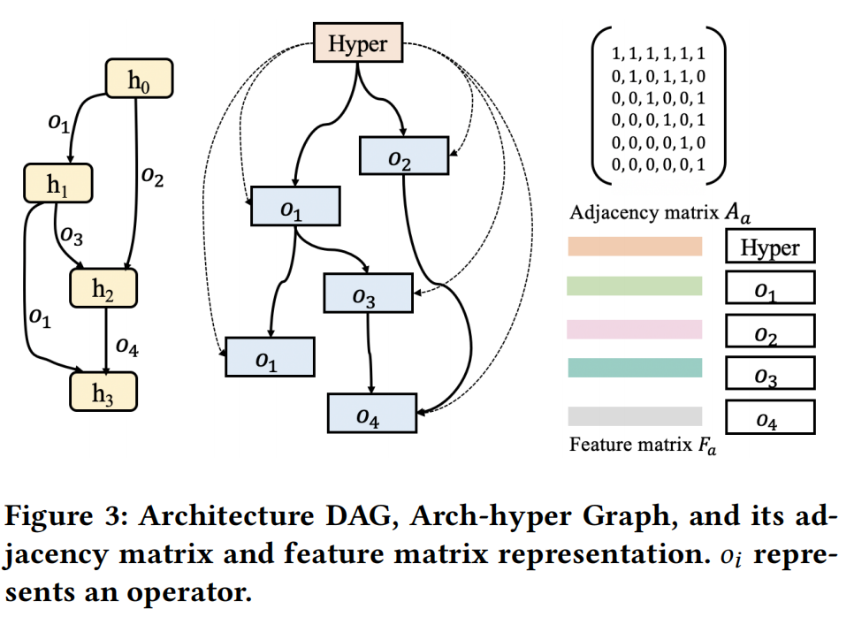
Use an adjacency matrix $A _a$ and a feature matrix $F _a$ to encode an arch-hyper graph $G _a$.
$A_a \in \mathbb{R} ^{(n+1) \times (n+1)}$ reflects the topology information of $G _a$,where the binary value of an entry $(i,j)$ indicates whether there is information flow between these two nodes. Self-connections are also added to all nodes.
$F _a \in \mathbb{R} ^{(n+1) \times D}$ contains operator information of each node.
For the “Hyper” node, the original feature is an $r$-dimensional vector from the hyperparameter search space. Employ min-max normalization to normalize the original feature of the “Hyper” node and then convert the normalized feature into a $D$-dimensional embedding:
$$F _h = norm(H _o) W _c$$
where $H _o \in \mathbb{R} ^r$ is the original feature vector of the “Hyper” node and $W _c \in \mathbb{R} ^{r \times D}$ is learnable matrix, and $F _h \in \mathbb{R} ^D$ is the embedding of the “Hyper” node.
For the other $n$ operator nodes, first embed each operator with an one-hot embedding and then introduce a learnable matrix that converts the one-hot embeddings of all operator nodes into an embedding matrx:
$$F _e = H _e W _e$$
where $H _e \in \mathbb{R} ^{n \times |O|}$ and $F _e \in \mathbb{R} ^{n \times D}$ are the one-hot embeddings and the transformed embedding matrix of the $n$ nodes. $W _e \in \mathbb{R} ^{|O| \times D}$ is the learnable matrix, and $|O|$ is the number of candidate operator types in the architecture search space.
$$F _a = concatenate(F _h,F _e)$$
This way, each arch-hyper in the joint search space can be encoded as an adjacency matrix $A _a$ and a feature matrix $F _a$.
$W _c$ and $W _e$ are learned together with the model parameters of the AHC.
Architecture-Hyperparameter Comparator
Propose an architecture-hyperparameter comparator(AHC) to compare and rank the arch-hypers so that one could avoid evaluating all candidate pairs.
Many existing studies propose an accuracy estimator(a neural network) trained by a large volume of $(ah, R(ah))$, where $ah$ is an arch-hyper and $R(ah)$ is the validation accuracy of a full obtained $ah$. It is very time-consuming. Instead of comparing by an absolute accuracy, using the relative comparison result of two arch-hypers is sufficient to obtain their ranking.
Use a comparator to achieve the relative accuracy relation of two candidate arch-hypers.
Given a measured $(ah ,R(ah))$ pairs to build $a(a-1)$ training samples for $AHC$ in the form of $(ah _1,ah _2,y)$ by pairing every two of $(ah,R(ah))$ pairs, where $y$ is the binary value indicating which arch-hyper has higher accuracy, thus alleviating the issue of requiring a large amount of training samples.
A well trained AHC can rank all $(ah _1,ah _2)$ pairs from the joint search space.
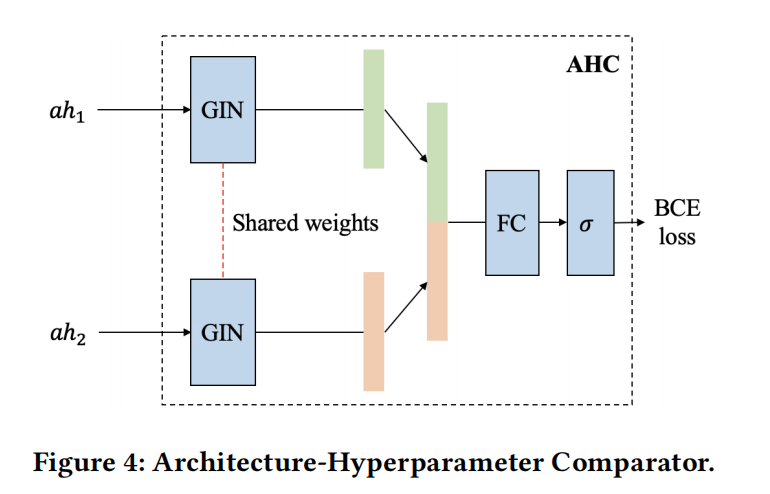
Considering the powerful ability of GIN(Graph Isomorphism Network) to distinguish any two graphs, leverage GINs to encode the arch-hyper as a compact continuous embedding.
$$GIN(A _a,F _a) = H ^{(L)}$$
$$H ^{(k)} = MLP ^{(k)}((1+\epsilon ^{(k)})\cdot H ^{(k-1)}+AH ^{(k-1)}),k=1,2,…,L$$
where $L$ is the number of GIN layers, $H ^{(0)} = F _a$, $\epsilon$ is a trainable bias, and MLP is the multi-layer perceptron.
Use $l _a$ to represent an arch-hyper.
$$L _a = concatenate(l _a,l _a’)$$
$$output = \mathbb{1}(\sigma(FC(L,w _l)) >= 0.5)$$
GIN is proposed in the following paper “How powerful are Graph Neural Networks?”
The Weisfeiler_Lehman_Isomorphism_Test is shown as followed:
Training AHC with Noisy Proxies
Design a computation-efficient $R’(\cdot)$ to easily obtain a large number of noisy training samples $(ah _1,ah _2,y’)$.
Proxy Performance Metric
Naively using proxy metrics form CV domain can create severely mislabeled training samples $(ah _1,ah _2,y’)$ and is too noisy to achieve a reliable AHC.
Propose a computation-efficient proxy metric specifically for CTS forecasting which performs better than metircs from CV domain(e.g. (nparam) , Synflow , Snip, (NTK) score).
During experiments, the author notices that if the validation accuracy of an arch-hyper is higher than another in the first few epochs, then its final validation accuracy is very likely to be higher as well.
So the author proposes to train an arch-hyper for only $k<=5$ epochs and use the validation accuracy of the under-trained model as a proxy.
early-validation proxy:
$$R’(ah) = ErrorMetric(\mathcal{F}(ah) _k ,\mathcal{D} _{val})$$
where $\mathcal{F} (ah) _k$ is the CTS forecasting model under arch-hyper setting $ah$ with only $k$ epochs training.
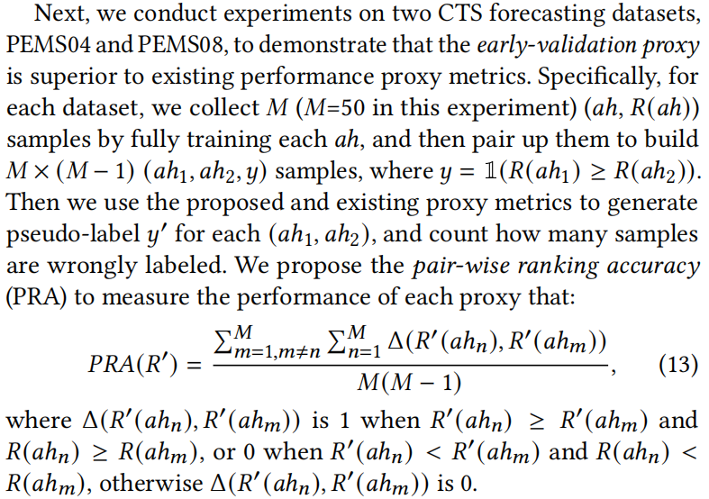
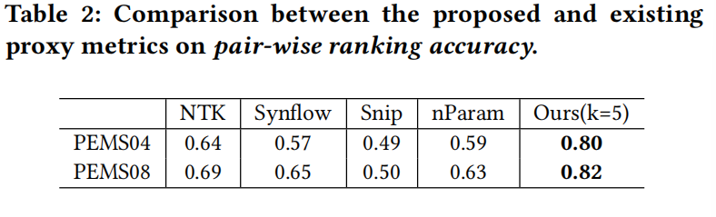
Training AHC with denoising algorithms
To minimize the impact of training with noisy samples, the author fully train a few additional arch-hypers to obtain clean training samples of the form $(a h_1,ah _2,y)$ and then train the AHC with both noisy and clean samples in a denoising manner.
Adopt a commonly used denoising training method, fine-tune.
- Randomly sample $L _1$ arch hypers from the joint search space and use the proposed proxy metric to obtain the proxy score $R’(ah)$ for each arch-hyper $ah$.
- Pair up these arch-hypers to produce $L _1(L _1 - 1)$ noisy samples of the form $(ah _1,ah _2,y’)$.
- Randomly sample $L _2(L _2 << L _1)$ arch-hypers and train them completely to obtain the validation accuracy $R(ah)$ for each arch-hyper $ah$.
- Also pair up these arch-hypers to produce $L _2(L _2 -1)$ clean samples of the form $(ah _1,ah _2,y)$.
The processes of collecting noisy and clean samples are independent and can be highly parallelized. After collecting noisy and clean samples, the author first warm up the AHC for $k _t$ epochs using the noisy samples, and then use the clean samples to finetune the AHC until convergence.
Search Strategy and AHC Transfer
Search Strategy
Since the joint seach space is enormous, it is inefficient to compare all candidate arch-hypers using the AHC to get the optimal one.
Address the issue with following steps:
-
Remove the arch-hypers that do not contain either spatial or temporal operators.
-
Consider a heuristic approach e.g., evolutionary algorithm to find the best arch-hyper in the shrunk joint search space.
-
First sample $K _s$ arch-hypers, which are paired up to produce $K _s(K _s -1)/2$ comparison pairs of the form $(ah _1,ah _2)$, and the descending ranking of the $K _s$ arch-hypers can be easily obtained based on the comparative performance determined by the trained AHC.
-
Select the top $K _p$ from the $K _s$ arch-hypers in descending order as the initial population. Each arch-hyper has crossover and mutation probability $p _1$ and $p _2$, respectively, when generating new offspring in each evolution step. The offspring are added to the population, and the learned AHC is used to compare arch-hypers in the population and to remove inferior arch-hypers to keep the population size at $K _p$ .
-
Choose the top-$K$ arch-hypers from the population to collect their exact forecasting accuracy and pick the one with the highest accuracy as the final searched ST-block.
The evolutionary algorithm is shown as followed:
Transfer a well-trained AHC
Give a well-trained AHC $\mathcal{N} _s$ on a source dataset $D _s$ (use $L _1$ noisy samples and $L _2$ clean samples for training), a new well-trained AHC $\mathcal{N} _s$ from $D _s$ to $D _t$ with much less arch-hyper samples $ah _t$ on $D _t$:
$$\mathcal{N} _t(D _t) \overset{ah _t}{\longleftarrow} \mathcal{N} _s (D _s)$$
where $ah _t$ consists of $z _1$ noisy samples and $z _2$ clean samples, and $z _1 << L _1,z _2 << L _2$. The transfer process is particularly implemented using the fine-tuning technique.
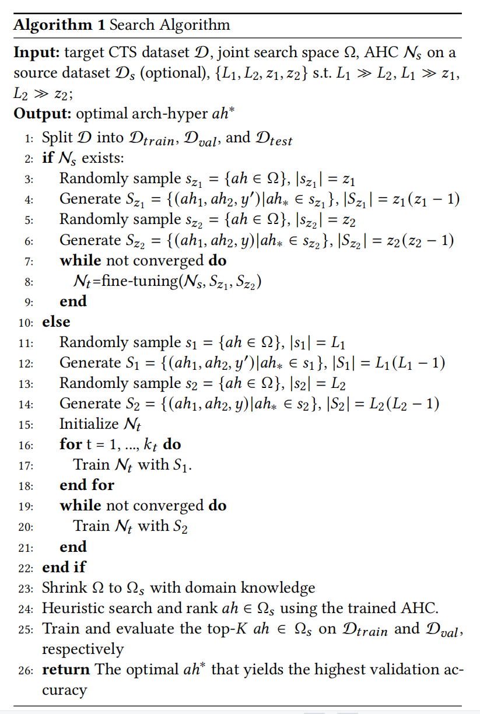
Experiments
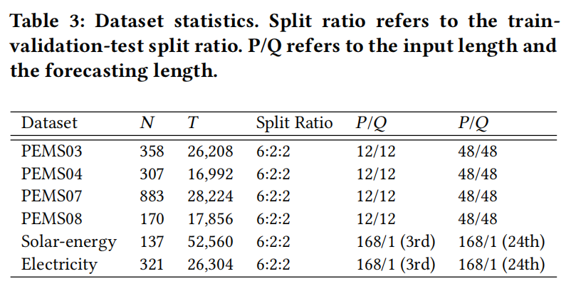
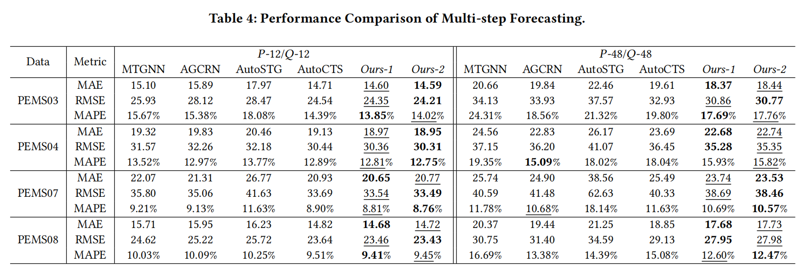
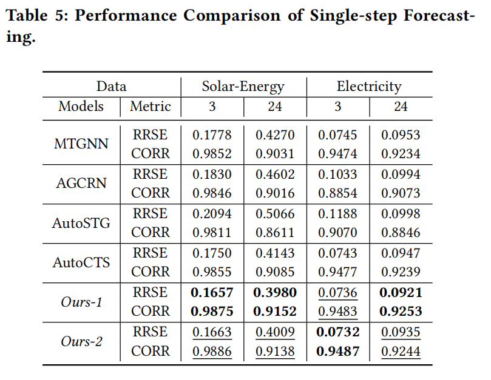
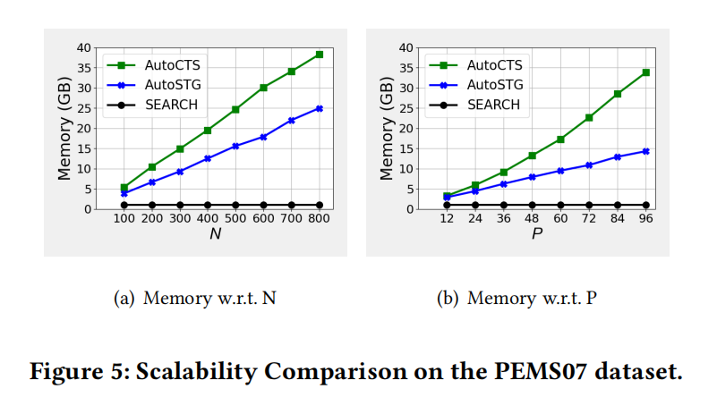
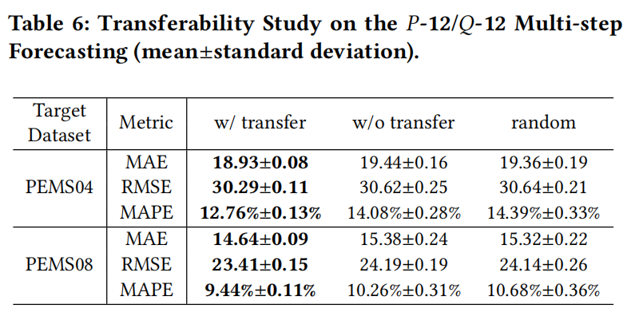
The paper
If you like this blog or find it useful for you, you are welcome to comment on it. You are also welcome to share this blog, so that more people can participate in it. If the images used in the blog infringe your copyright, please contact the author to delete them. Thank you !